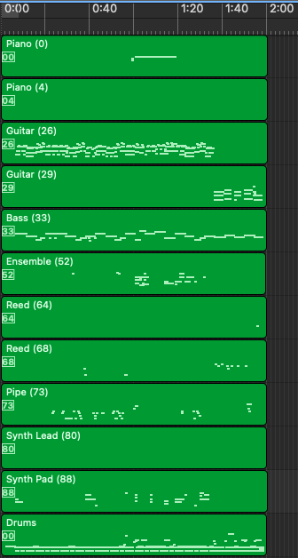

MR-MT3: Memory Retaining Token-based Multi-Track Automatic Music Transcription to Mitigate Instrument Leakage
MIDI Transcription Examples
Contents
Examples for Training From Scratch Only the first two minutes of MIDI are shown in this page. Links to the full transcribed MIDI are provided. Audio files are rendered using pretty_midi 's fluidsynth function.
MIDI tracks are sorted in ascending order of program numbers, and named with convention "program_family (program_number)".
For the train-from-scratch section, we compare MIDIs between:
Ground Truth provided in Slakh dataset;MT3 checkpoint provided by the authors of MT3 ;MT3 reproduced from scratch ;MR-MT3 (\(L_{\textrm{agg}} = 32\)): best instrument leakage ratio (\(\xi\)) and F1 score according to Table 2;MR-MT3 (\(L_{\textrm{agg}} = 64\), \(L_{\textrm{max_hop}} = 3\)): best onset F1 score according to Table 2.
► Track01888
Ground Truth [MIDI ] MT3 Checkpoint [MIDI ] MT3 Reproduced From Scratch [MIDI ] MR-MT3, \(L_{\textrm{agg}} = 32\) [MIDI ] MR-MT3, \(L_{\textrm{agg}} = 64\), \(L_{\textrm{max_hop}} = 3\) [MIDI ]
Number of Tracks: 10Number of Tracks: 14Number of Tracks: 17Number of Tracks: 11Number of Tracks: 12
Instrument Leakage Ratio (\(\xi\)): 1.0Instrument Leakage Ratio (\(\xi\)): 1.4Instrument Leakage Ratio (\(\xi\)): 1.7Instrument Leakage Ratio (\(\xi\)): 1.1Instrument Leakage Ratio (\(\xi\)): 1.2
Instrument F1: 1.0Instrument F1: 0.33Instrument F1: 0.30Instrument F1: 0.40Instrument F1: 0.36
Onset F1: 100.0 / 100.0 / 100.0Onset F1: 48.5 / 44.2 / 21.0Onset F1: 42.3 / 35.1 / 17.9Onset F1: 41.6 / 34.9 / 17.4Onset F1: 40.9 / 33.5 / 16.8
► Track01891
Ground Truth [MIDI ] MT3 Checkpoint [MIDI ] MT3 Reproduced From Scratch [MIDI ] MR-MT3, \(L_{\textrm{agg}} = 32\) [MIDI ] MR-MT3, \(L_{\textrm{agg}} = 64\), \(L_{\textrm{max_hop}} = 3\) [MIDI ]
Number of Tracks: 14Number of Tracks: 17Number of Tracks: 17Number of Tracks: 12Number of Tracks: 11
Instrument Leakage Ratio (\(\xi\)): 1.0Instrument Leakage Ratio (\(\xi\)): 1.214Instrument Leakage Ratio (\(\xi\)): 1.214Instrument Leakage Ratio (\(\xi\)): 0.857Instrument Leakage Ratio (\(\xi\)): 0.785
Instrument F1: 1.0Instrument F1: 0.35Instrument F1: 0.28Instrument F1: 0.43Instrument F1: 0.36
Onset F1: 100.0 / 100.0 / 100.0Onset F1: 68.1 / 66.4 / 40.2Onset F1: 65.3 / 62.7 / 43.3Onset F1: 68.7 / 67.0 / 44.1Onset F1: 66.3 / 64.1 / 43.1
► Track01893
Ground Truth [MIDI ] MT3 Checkpoint [MIDI ] MT3 Reproduced From Scratch [MIDI ] MR-MT3, \(L_{\textrm{agg}} = 32\) [MIDI ] MR-MT3, \(L_{\textrm{agg}} = 64\), \(L_{\textrm{max_hop}} = 3\) [MIDI ]
Number of Tracks: 14Number of Tracks: 17Number of Tracks: 16Number of Tracks: 13Number of Tracks: 13
Instrument Leakage Ratio (\(\xi\)): 1.0Instrument Leakage Ratio (\(\xi\)): 1.21Instrument Leakage Ratio (\(\xi\)): 1.14Instrument Leakage Ratio (\(\xi\)): 0.93Instrument Leakage Ratio (\(\xi\)): 0.93
Instrument F1: 1.0Instrument F1: 0.29Instrument F1: 0.30Instrument F1: 0.25Instrument F1: 0.33
Onset F1: 100.0 / 100.0 / 100.0Onset F1: 78.7 / 78.2 / 39.4Onset F1: 80.5 / 79.7 / 37.0Onset F1: 82.4 / 81.6 / 38.6Onset F1: 83.3 / 82.5 / 37.7
► Track01982
Ground Truth [MIDI ] MT3 Checkpoint [MIDI ] MT3 Reproduced From Scratch [MIDI ] MR-MT3, \(L_{\textrm{agg}} = 32\) [MIDI ] MR-MT3, \(L_{\textrm{agg}} = 64\), \(L_{\textrm{max_hop}} = 3\) [MIDI ]
Number of Tracks: 8Number of Tracks: 16Number of Tracks: 13Number of Tracks: 10Number of Tracks: 12
Instrument Leakage Ratio (\(\xi\)): 1.0Instrument Leakage Ratio (\(\xi\)): 2.0Instrument Leakage Ratio (\(\xi\)): 1.63Instrument Leakage Ratio (\(\xi\)): 1.25Instrument Leakage Ratio (\(\xi\)): 1.5
Instrument F1: 1.0Instrument F1: 0.26Instrument F1: 0.19Instrument F1: 0.23Instrument F1: 0.32
Onset F1: 100.0 / 100.0 / 100.0Onset F1: 63.2 / 62.3 / 49.8Onset F1: 63.6 / 59.5 / 48.2Onset F1: 64.5 / 61.4 / 50.7Onset F1: 64.9 / 60.8 / 49.3
► Track02002
Ground Truth [MIDI ] MT3 Checkpoint [MIDI ] MT3 Reproduced From Scratch [MIDI ] MR-MT3, \(L_{\textrm{agg}} = 32\) [MIDI ] MR-MT3, \(L_{\textrm{agg}} = 64\), \(L_{\textrm{max_hop}} = 3\) [MIDI ]
Number of Tracks: 9Number of Tracks: 13Number of Tracks: 21Number of Tracks: 10Number of Tracks: 11
Instrument Leakage Ratio (\(\xi\)): 1.0Instrument Leakage Ratio (\(\xi\)): 1.44Instrument Leakage Ratio (\(\xi\)): 2.33Instrument Leakage Ratio (\(\xi\)): 1.11Instrument Leakage Ratio (\(\xi\)): 1.22
Instrument F1: 1.0Instrument F1: 0.6Instrument F1: 0.42Instrument F1: 0.7Instrument F1: 0.66
Onset F1: 100.0 / 100.0 / 100.0Onset F1: 73.6 / 66.5 / 61.7Onset F1: 71.4 / 66.6 / 62.5Onset F1: 79.1 / 74.3 / 73.8Onset F1: 80.3 / 77.3 / 71.7
Examples for Continual Training Only the first two minutes of MIDI are shown in this page. Links to the full transcribed MIDI are provided. Audio files are rendered using pretty_midi 's fluidsynth function.
MIDI tracks are sorted in ascending order of program numbers, and named with convention "program_family (program_number)".
For the continual training section, we compare MIDIs for the shuffled experiment, between:
Ground Truth provided in Slakh dataset;MT3 continually trained for 100 epochs from given checkpoint;MR-MT3 (\(L_{\textrm{agg}} = 64\), \(L_{\textrm{max_hop}} = 3\)) continually trained for 100 epochs from given checkpoint.
► Track01881
Ground Truth [MIDI ] MT3 [MIDI ] MR-MT3, \(L_{\textrm{agg}} = 64\), \(L_{\textrm{max_hop}} = 3\) [MIDI ]
Number of Tracks: 6Number of Tracks: 9Number of Tracks: 8
Instrument Leakage Ratio (\(\xi\)): 1.0Instrument Leakage Ratio (\(\xi\)): 1.5Instrument Leakage Ratio (\(\xi\)): 1.33
Instrument F1: 1.0Instrument F1: 0.4Instrument F1: 0.42
Onset F1: 100.0 / 100.0 / 100.0Onset F1: 86.3 / 84.6 / 47.5Onset F1: 87.3 / 85.9 / 48.1
► Track01893
Ground Truth [MIDI ] MT3 [MIDI ] MR-MT3, \(L_{\textrm{agg}} = 64\), \(L_{\textrm{max_hop}} = 3\) [MIDI ]
Number of Tracks: 14Number of Tracks: 12Number of Tracks: 12
Instrument Leakage Ratio (\(\xi\)): 1.0Instrument Leakage Ratio (\(\xi\)): 0.857Instrument Leakage Ratio (\(\xi\)): 0.857
Instrument F1: 1.0Instrument F1: 0.35Instrument F1: 0.35
Onset F1: 100.0 / 100.0 / 100.0Onset F1: 76.1 / 75.2 / 38.3Onset F1: 78.3 / 77.6 / 40.4

► Track01968
Ground Truth [MIDI ] MT3 [MIDI ] MR-MT3, \(L_{\textrm{agg}} = 64\), \(L_{\textrm{max_hop}} = 3\) [MIDI ]
Number of Tracks: 6Number of Tracks: 9Number of Tracks: 7
Instrument Leakage Ratio (\(\xi\)): 1.0Instrument Leakage Ratio (\(\xi\)): 1.5Instrument Leakage Ratio (\(\xi\)): 1.16
Instrument F1: 1.0Instrument F1: 0.71Instrument F1: 0.66
Onset F1: 100.0 / 100.0 / 100.0Onset F1: 81.6 / 79.8 / 73.0Onset F1: 83.8 / 82.1 / 74.4
► Track02002
Ground Truth [MIDI ] MT3 [MIDI ] MR-MT3, \(L_{\textrm{agg}} = 64\), \(L_{\textrm{max_hop}} = 3\) [MIDI ]
Number of Tracks: 9Number of Tracks: 15Number of Tracks: 9
Instrument Leakage Ratio (\(\xi\)): 1.0Instrument Leakage Ratio (\(\xi\)): 1.67Instrument Leakage Ratio (\(\xi\)): 1.0
Instrument F1: 1.0Instrument F1: 0.54Instrument F1: 0.62
Onset F1: 100.0 / 100.0 / 100.0Onset F1: 69.3 / 63.7 / 62.2Onset F1: 67.1 / 61.6 / 60.7
► Track02030
Ground Truth [MIDI ] MT3 [MIDI ] MR-MT3, \(L_{\textrm{agg}} = 64\), \(L_{\textrm{max_hop}} = 3\) [MIDI ]
Number of Tracks: 9Number of Tracks: 13Number of Tracks: 10
Instrument Leakage Ratio (\(\xi\)): 1.0Instrument Leakage Ratio (\(\xi\)): 1.44Instrument Leakage Ratio (\(\xi\)): 1.11
Instrument F1: 1.0Instrument F1: 0.5Instrument F1: 0.55
Onset F1: 100.0 / 100.0 / 100.0Onset F1: 89.8 / 89.0 / 50.5Onset F1: 91.1 / 90.2 / 52.2